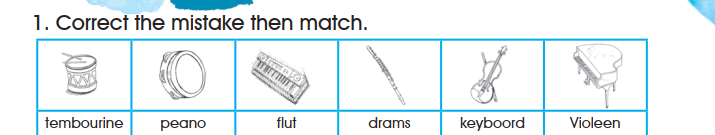
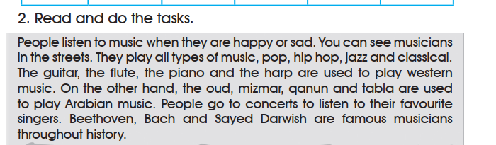
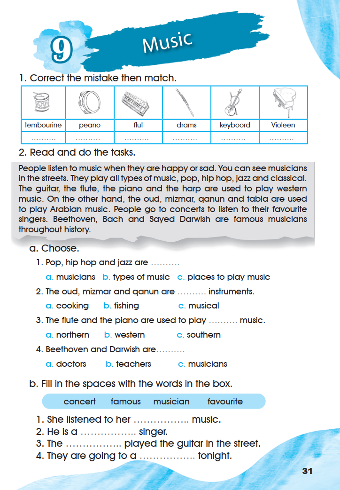
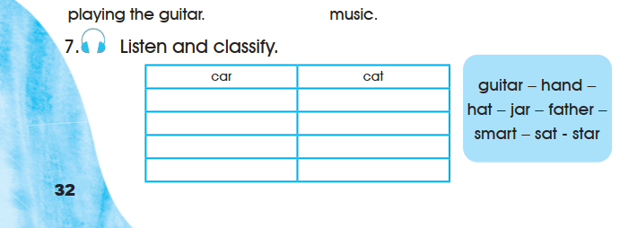
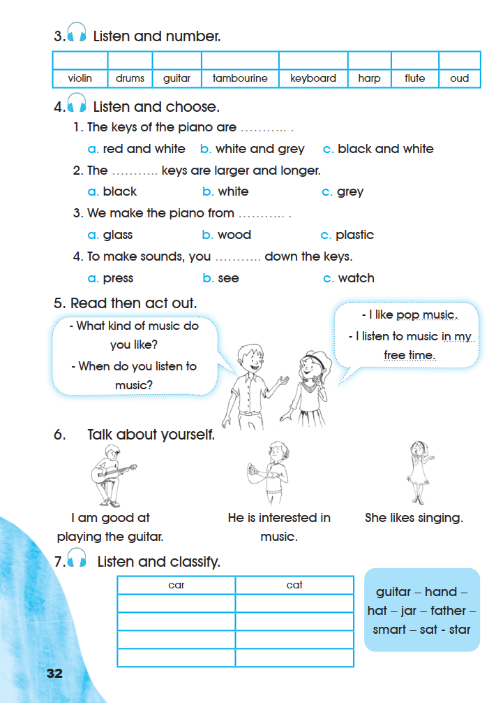
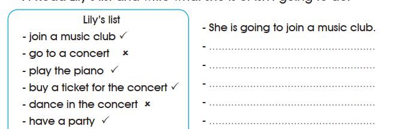
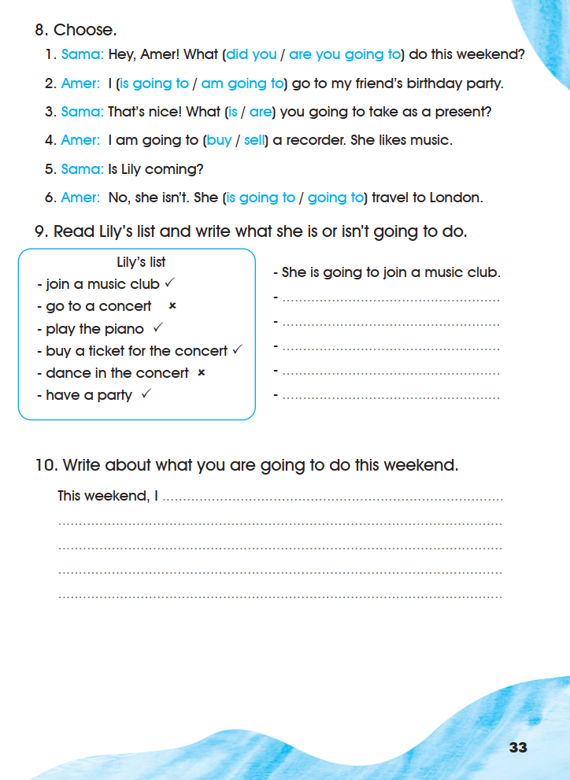

Workbook — Music
Exercises 1–10 appear in their original order across pages 31–33. Listening notes are kept separate from the book’s wording.
1. Correct the mistake then match.

0 of 6 filled.
This exercise is treated as a spelling correction only. The six printed labels do not sit under the drawings they name — the drum is labelled tembourine, the tambourine peano, and so on — and the page does not say whether the pupil should also re-order the labels. That second step is therefore not marked here and no matching answer is given.
2. Read and do the tasks.

People listen to music when they are happy or sad. You can see musicians in the streets. They play all types of music, pop, hip hop, jazz and classical. The guitar, the flute, the piano and the harp are used to play western music. On the other hand, the oud, mizmar, qanun and tabla are used to play Arabian music. People go to concerts to listen to their favourite singers. Beethoven, Bach and Sayed Darwish are famous musicians throughout history.
a. Choose.
- 1
Pop, hip hop and jazz are ……….
- 2
The oud, mizmar and qanun are ………. instruments.
- 3
The flute and the piano are used to play ………. music.
- 4
Beethoven and Darwish are……….
0 of 4 answered.
b. Fill in the spaces with the words in the box.
- concert
- famous
- musician
- favourite
- 1
She listened to her music.
- 2
He is a singer.
- 3
The played the guitar in the street.
- 4
They are going to a tonight.
0 of 4 filled.
1 Correct the mistake then match — spelling only: 1 tambourine · 2 piano · 3 flute · 4 drums · 5 keyboard · 6 violin.
2 a Choose: 1 b. types of music · 2 c. musical · 3 b. western · 4 c. musicians.
2 b Fill in the spaces: 1 favourite · 2 famous · 3 musician · 4 concert.
The six spellings in exercise 1 are the only thing marked. The printed page also asks you to match, but the labels are printed away from the drawings they name and the page does not settle the intended order, so no matching answer is given. Every answer in exercise 2 is stated in the printed text or fixed by the printed box.
Open the source page · Workbook · p. 31
This is the original supplied image, shown without redrawing or generation.

3. Listen and number.
0 of 8 answered.
4. Listen and choose.
- 1
The keys of the piano are ……….
- 2
The ………. keys are larger and longer.
- 3
We make the piano from ……….
- 4
To make sounds, you ………. down the keys.
Item 2 puts two different ideas in one sentence: the printed words are larger and longer, and the page does not say which of the three options the recording describes.
0 of 4 answered.
5. Read then act out.
- What kind of music do you like?
- When do you listen to music?
- I like pop music.
- I listen to music in my free time.
6. Talk about yourself.
I am good at playing the guitar.
He is interested in music.
She likes singing.
Only the first caption is written in the first person. The second and third are printed in the third person, so they cannot be reused as statements about yourself without changing them.
7. Listen and classify.

| car | cat |
|---|---|
- guitar
- hand
- hat
- jar
- father
- smart
- sat
- star
The printed table has four empty rows in each column, which is eight places for eight printed words. The page does not say why the two headings are spelled the way they are.
0 of 8 filled.
3 Listen and number and 4 Listen and choose are decided by the recordings. The recordings were not supplied, so no number and no option is given.
7 Listen and classify is also decided by the recording. No grouping is given here.
5 Read then act out and 6 Talk about yourself are speaking tasks; the printed lines are examples, not keys.
Nothing in exercises 3, 4 and 7 is marked correct or incorrect on this page. Any choice you make only stores your own attempt on this browser.
Open the source page · Workbook · p. 32
This is the original supplied image, shown without redrawing or generation.

8. Choose.
- 1
Sama: Hey, Amer! What … do this weekend?
- 2
Amer: I … go to my friend’s birthday party.
- 3
Sama: That’s nice! What … you going to take as a present?
- 4
Amer: I am going to … a recorder. She likes music.
- 5
Sama: Is Lily coming?
Printed without brackets and without a gap, exactly as shown.
- 6
Amer: No, she isn’t. She … travel to London.
The page prints six numbered lines, but item 5 has no brackets, so only five of them are choices to make. All six lines are reproduced.
0 of 5 answered.
9. Read Lily’s list and write what she is or isn’t going to do.

Lily’s list
- join a music club ✓
- go to a concert ✗
- play the piano ✓
- buy a ticket for the concert ✓
- dance in the concert ✗
- have a party ✓
The second and fourth printed items sit oddly together: she is not going to go to a concert, but she is going to buy a ticket for the concert. That is how the page prints the list, and it is reproduced without change.
Example: - She is going to join a music club.
0 of 5 filled.
8 Choose: 1 are you going to · 2 am going to · 3 are · 4 buy · 5 no gap is printed · 6 is going to.
9 Read Lily’s list and write what she is or isn’t going to do: the page prints the first sentence itself, She is going to join a music club. The remaining five follow from the printed ticks and crosses: She isn’t going to go to a concert. · She is going to play the piano. · She is going to buy a ticket for the concert. · She isn’t going to dance in the concert. · She is going to have a party.
Every answer in exercise 8 is fixed by the printed conversation. Every answer in exercise 9 is fixed by the printed ticks and crosses. The oddity in Lily’s list is reproduced, not corrected.
10. Write about what you are going to do this weekend.
0 of 1 filled.
10 Write about what you are going to do this weekend: this is personal writing and the page prints no key. Illustrative example only, not a unique answer: This weekend, I am going to visit my grandmother. We are going to make a cake together, and I am going to read my new book in the evening.
Open the source page · Workbook · p. 33
This is the original supplied image, shown without redrawing or generation.
